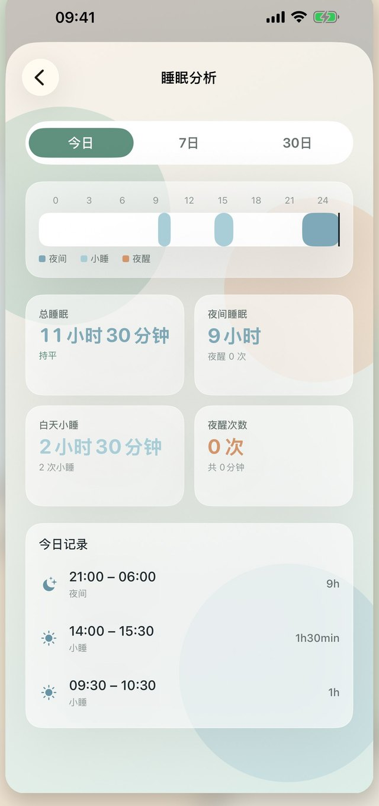

宝宝的每一天，轻松记下
喂养、睡眠、护理、成长——9 类记录一键写下；家人共享同一份宝宝档案，数据只保存在你的 iCloud。
免费 · 无内购 · 无需注册账号 · 支持 iPhone 与 iPad

已保存到你的 iCloud
睡眠计时中 · 11.5h
数据存在你自己的 iCloud
不收集 · 不追踪 · 无广告
离线也能记，联网自动同步
3 组 9 类
宝宝的一天，都在这里
打开即用，不用注册。按类型轻点一下就记好，高频操作还可以从桌面小组件一步直达。
喂养
- 母乳左右侧分别计时
- 配方奶奶量毫升
- 辅食第一口也算数
- 饮水
日常护理
- 换尿布状态一目了然
- 睡眠夜醒、暂停、补记
健康与成长
- 身高体重看得到的长高
- 体温℃ / ℉ 自由切换
- 用药记下每一次


睡眠
哄睡的夜，记得更清楚
一键开始计时，随时暂停；夜醒了顺手补一段，忘记录的也能补记。
- ✓快速开始 / 暂停，深夜操作不费神
- ✓今日、7 日、30 日睡眠回顾
- ✓桌面睡眠计时小组件，抬手可见
时间线
长大，是一帧一帧的
照片、里程碑、身高体重成长节点自动汇入时间线——只留值得纪念的时刻，不刷流水账。
- ✓第一次游泳、第一次叫妈妈，都找得到
- ✓按月份浏览，成长节点清晰标注
- ✓喂养、尿布这些日常操作不会打扰时间线

家庭共享
一起带娃，互不打架
通过 iCloud 邀请家人加入同一个家庭。谁喂的奶、谁换的尿布，各自记录、实时同步，看娃的人也始终不掉队。
owner · 管理家庭
创建家庭、邀请或移除成员、管理宝宝档案。
editor · 编辑记录
和 owner 一样记录与修改，日常带娃的主力。
viewer · 只读查看
适合老人或看娃的人，随时了解近况，不会误改记录。

数据只属于你
我们看不到，也拿不到
没有账号体系，没有自建服务器。记录保存在本机，登录 iCloud 后经加密同步到你的私有空间，开发团队无法查看。
- ✓不登录 iCloud 也能完整使用
- ✓随时导出 ZIP 备份，数据可以带走
- ✓无广告、无第三方统计 SDK
桌面小组件
抬手就记，不用找 App
首页概览
今天的喂养、睡眠、尿布概况，一眼掌握。
睡眠计时
计时中的睡眠随时可见，开始与结束一步完成。
快速记录
母乳、配方奶、换尿布，从桌面直接记。
诚实的设计
有些事，我们刻意不做
涉及健康的事，记录工具不该越界替你判断。我们把专业的事留给专业的人。
- ✕不做发烧判断——体温只客观记录，不标红、不设阈值
- ✕不算 BMI / 百分位——成长曲线请和儿保医生一起看
- ✕不做用药建议——不提醒、不推荐剂量
- ✕宝宝档案只归档——留一份完整的成长底稿